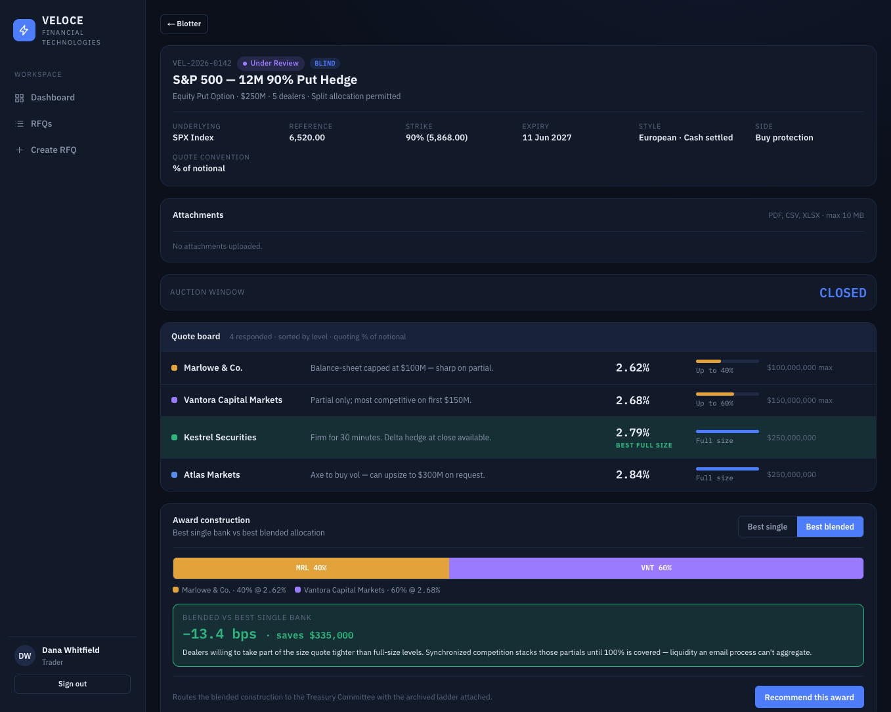

Structured multi-dealer auctions for OTC equity derivatives.
Veloce turns the phone-and-email RFQ process insurers use to hedge equity risk into a timed, blind, multi-dealer auction — with a complete best-execution trail from request to affirmation.
The problem
A treasury desk hedging a large equity book calls or emails a handful of dealer banks, collects quotes in inboxes and chat windows, and picks one. The process is slow, the competitive tension is hard to prove, partial-size liquidity is hard to aggregate, and the best-execution evidence is scattered across messages.
What Veloce does
Veloce runs the request as a synchronized, blind auction: every invited dealer quotes the same request at the same time without seeing each other. When the window closes, the desk sees a ranked board, an automatic single-bank vs. blended-allocation comparison, threshold and concentration checks, and a one-click route into approval, trade capture, STP, and compliance — each step written to an append-only audit log.
End to end, in one platform
A trader builds an RFQ and invites a dealer panel.
Dealers quote blind; the board ranks responses.
Single vs. blended construction, with best-ex math.
Threshold & concentration checks gate the award.
Trades booked, FpML-style payload generated.
Lifecycle advanced; compliance evidence exportable.
See How it works for the full narrative with screenshots, or the User guide for role-by-role walkthroughs.

Built for every seat on the desk
Launch RFQs, run the auction, construct the award.
Review awards against policy thresholds and concentration.
Capture trades, generate STP, advance affirmation.
Best-execution evidence, exceptions, concentration.
Dealer panels, entitlements, policy reference, audit.